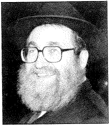

|
|  |
Rabbi, teacher, mentor, counselor, guide, mashpia. Which word best describes Rabbi Dovid Wichnin, z”l? All of the above and more. In a word, he was a Chossid of the Rebbe striving to carry out his shlichus.
For 18 years, Rabbi David Wichnin was the Rosh Yeshiva of the Rabbinical College of America’s Yeshiva Tiferes Bachurim in Morristown, NJ, one of the largest yeshivas in America for baalei teshuva (Jews who have returned to the Judaism of their ancestors). With humor, discipline and love, Rabbi Wichnin taught and guided thousands of students over the years. Students remember Rabbi Wichnin as both a tough and compassionate teacher and role-model who lead the yeshiva with exuberance.
He also helped hundreds more as the rabbi of the Tzemach Tzedek shul in Monsey, NY, where he lived with his wife and three children. He was sought out often for marital advice and performed immeasurable acts of kindness (often in secret), and carried out the mivtzoyim (mitzvah campaigns) of the Lubavitcher Rebbe.
Chaim Dovid Nota Wichnin was born in 1938 in Bobroisk, White Russia, to Rabbi Nachman Dov and Faigy. Not long after his birth, his family fled to southeastern Russia — as did many Lubavitcher Chassidim during World War II — to escape the Nazis. In the winter of 1941, his mother and sister Hinda died in Samarkand, Russia. In 1946, he and his father fled from Russia, through Poland and Austria until they finally arrived in France. He remained in Paris where he attended Yeshiva until 1951.
In 1951, Rabbi Wichnin and his father immigrated to Canada, settling in Montreal. He learned at the Lubavitch Yeshiva in Montreal where he began to demonstrate his brilliance as a Torah scholar. In 1962 he received smicha (rabbinical ordination) from the Rabbinical College of Canada’s Yeshiva Tomchei Temimim in Montreal.
In 1965, he began a long career as an educator when he took a position as a teacher at Central High School for Girls in Brooklyn, NY, where he taught until 1972. He moved to Brookline, Mass, in 1972, where he became principal of the New England Hebrew Day Academy until 1977. While living in Brookline, Rabbi Wichnin became a favorite of Rav Yosef Dov Soloveitchik, z”l, the late Torah authority and leader. In 1977 Rabbi Wichnin took on a new challenge, joining the staff of Tiferes Bachurim in Morristown where he helped establish it as a first-rate Torah learning center.